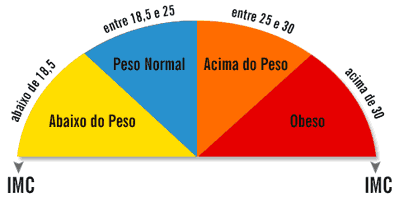

Estruturas Condicionais
Created by Fernando Marques
Revisão
- Variáveis
- Declaração
- Atribuição
- Expressão
Revisão
- Bibliotecas
- stdio.h
- math.h
Revisão
- Estruturas condicionais
- If
- Else
- Switch
Múltiplos Ifs
- Podemos colocar vários ifs no mesmo código
- Tentem fazer o IMC!

- Fazer um programa em C que leia dois números reais e imprima: a. Os dois números; b. o dobro do menor e a quinta parte do maior número. Se forem iguais, imprimir mensagem “os números são iguais”.
- Fazer um programa em C para ler três números e imprimir se eles podem ser ou não lados de um triângulo.
- Preencher a enquete de Um Minuto